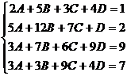
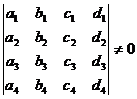

聯立四元一次方程
程式由網友 Alan Cai 提供。
若果輸入係數為整數，答案會以分數形式表示，建議將計數機預先設定為假分數形式表示(按 SHIFT SETUP → → 2 )。
更新寫日期: 2013年12月12日
程式需要在 REG Lin 模式下執行，因此在選擇新程式位置後，按 5 1 選用REG Lin模式。
注意 : 藍色的英文字為統計模式中的變數(例如: Σx 按 Shift 1 2，Σy 按 Shift 1 → 2，Σxy 按 Shift 1 → 3 等等)，FreqOn 按 Shift MODE ← ← 1，E 是按 EXP。
程式 (359 bytes)
FreqOn: E50→M: ?→A: ?→B: ?→C: 1 ; 2-1(A+B-2C
DT:
-1 ; 2-1(A-B DT: 1 , 1 ; C DT: ?→D: ?→X:
M-1 , 1 ; M(X-C DT:
?→Y: ?→A: ?→B: BΣx4 - YΣx2y→B: ?→C: ?→X: 0 , 1 ; -
Σy DT:
; B DT: , M-1 ; M(AΣx4 - YΣx3 - B DT: M-1, 0 ; M(XΣx4 - YΣxy -
Σx DT:
0 ; -n DT: ; CΣx4 - YD DT: ?→X: ?→Y: YΣx4 - XΣx3→Y: ?→A:
AΣx4 Σy - XΣx2y Σy - YΣy2→A: ?→B: BΣx4Σy - XDΣy - Yn→B:
?→C: CΣx4 Σy - XΣxy Σy - YΣx→C: ?→X: ?→Y: YΣx4 - XΣx3→Y:
?→M: MΣx4 Σy - XΣx2y Σy - YΣy2→M: D ; 0 DT: ?→D: MB - A(DΣx4 Σy - XAns
Σy - Yn:
?→D: (MC- A(DΣx4 Σy - XΣxy Σy - YΣx))┘Ans→D: (C - BD)┘A→C:
(Σx - nD - Σy2C)┘Σy→B: ;0DT: (Σxy - AnsD - Σx2yC - Σx3B)┘Σx4→A◢ B◢ C◢ D
例題: 解聯立方程 :

按 Prog 1 再按 2 EXE 5 EXE 3 EXE 4 EXE 1 EXE
5 EXE 12 EXE 7 EXE 1 EXE 2 EXE
3 EXE 7 EXE 6 EXE 9 EXE 9 EXE
3 EXE 3 EXE 9 EXE 4 EXE 7 EXE
(顯示A= - 912/25) EXE (顯示B=237/25) EXE (顯示C=256/25) EXE (顯示D= - 26/25)
註1: 方程組的答案分別儲存在記憶A、B、C及D中。
註2: 若方程組為 a1w + b1x + c1y + d1z = e1 ，a2w + b2x + c2y + d2z = e2，a3w + b3x + c3y + d3z = e3，a4w + b4x + c4y + d4z = e4。
解聯立四元一次方程的限制條件為:
a1≠0

若果出現Math error，代表方程組的行列式為零 或違反限制條件，若果是違反限制條件，請將方程組內的方程式調換次序輸入。
返回 CASIO fx-50FH、fx-3650P II、fx-50FH II及fx-50F PLUS 程式集